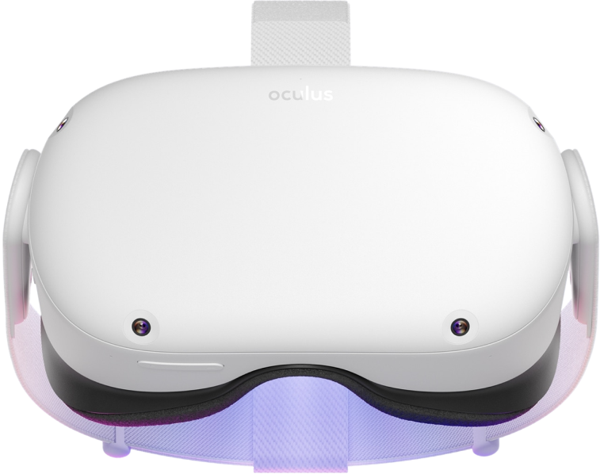

Automated and programmable, this sleek black machine takes coffee from beans to brew-both hot and iced-quickly and precisely.
The automatic adjustable steel burr grinder features customizable and pre-programmed grind settings for coffee,
iced coffee and espresso drinks, while the manual milk steamer froths both dairy and alternative milks to perfection.
Quest 2 pushes the state of VR forward with a redesigned all-in-one form factor,
new Touch controllers, and our highest-resolution display ever.

Alexa is a virtual assistant AI - essentially a digital voice that can recognise spoken commands and then talk back,
meaning it can answer questions and perform certain tasks such as playing music.
Alexa is most commonly found in the Amazon Echo, a series of speakers that use the Alexa software.
weight: 3.27 lbs.
flight time: up to 27 minutes.
maximum speed: 36 mph.
Tile is a company offering trackers that connect via Bluetooth Low Energy (Bluetooth LE or BLE),
allowing the owner to use a smartphone app to locate those trackers on demand.